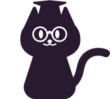
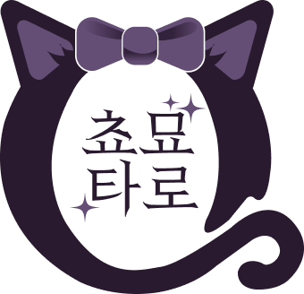
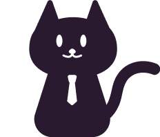
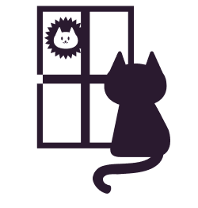
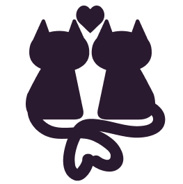
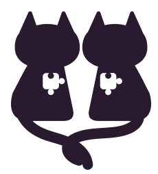

학업운








삶의 고통과 어려움을 잘 넘기기 위한 도움을 드리는 것이 리더가 추구하는 방향성이기 때문에,
현재의 문제 상황과 앞으로 일어날 일들을
어떻게 하면 내담자님이 원하는 흐름으로
이어지게 할지 같이 고민하며 답을 찾아가는 과정이라고 생각해주세요.
그래서 늘 좋은 조언이나 문제 상황을 바꾸는 해결 방안까지 내어드리려고 노력합니다.
상담 시간, 질문, 스프레드 등 상호 동의 없이 진행되는 것은 없으며
이 때 책정된 가격을 1차 결제금으로 결제 요청 드립니다.
보조카드 추가금은 발생하지 않습니다. 단, 추가 시간이나 추가 질문의 경우 추가금이 발생할 수 있습니다.
리딩 내용을 그대로 업로드 할 경우 출처를 남겨 주세요! 쵸묘 타로(@ tarot_tyoumyou)
리딩 내용이 마음에 안드시거나, 부족한 부분이 있다고 생각이 되시면 따로 문의주세요. 환불은 불가합니다.
시간은 예약 시작 시간부터 측정하며 지각으로 시간이 지체됐을 경우에도 예외없이 원래 종료 시간에 끝납니다.
시간 추가도 추가금이 들기 때문에 지각은 삼가해주세요.
예를 들면, 10시 예약에 30분 상담일 경우,
10시부터 10시 반까지가 상담 시간으로
지정이 되어있으므로 지각을 하셔도 상담 시간을 늘려드리지 않습니다.
대신, 예약시간 1시간 전까지는 일정 조율 가능하니 늦으실 것 같으면 꼭 사전에 연락주세요!
“쵸묘 타로, 당신의 상황에 꼭 맞는 맞춤 리딩.”